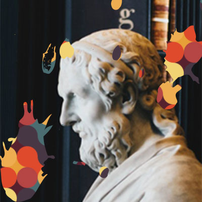

My-Portfilo
EXPLORE

My-Portfolio.site
M.Inoue
Web engineer
PHPを中心にプログラミングしています。
Laravel / VueでWebサービスを作っています。
ご用命があればメールまたはTwitter DMでお待ちしております。
mailto:pasteur1822@gmail.com
Twitter
Github
OCRusionリリースしました
2018/10/14
日本発としては初の無料OCRサービス『OCRusion』リリースしました
現在はアルファ版です。
Tweet #OCRusion